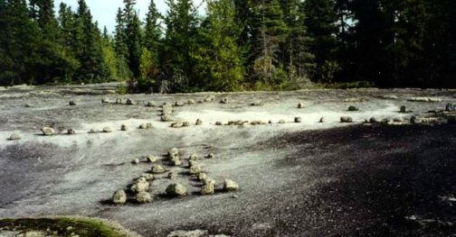
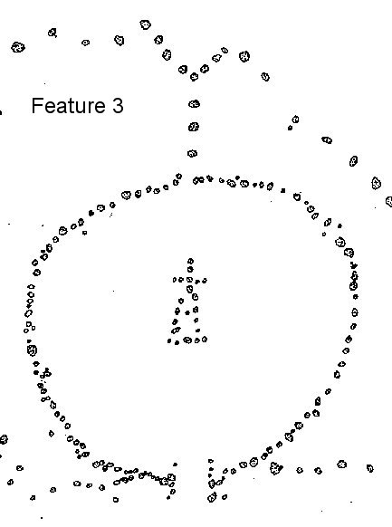
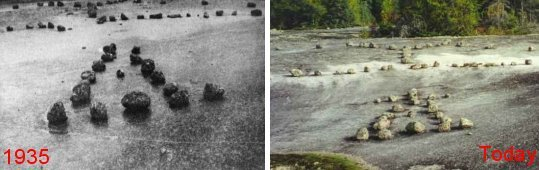
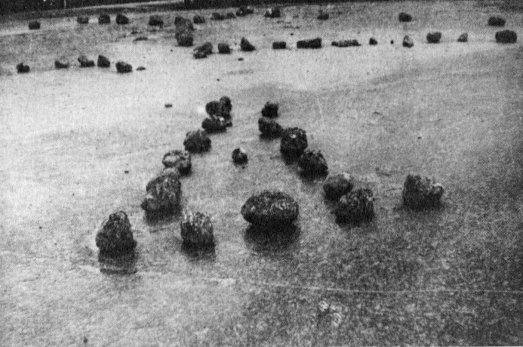
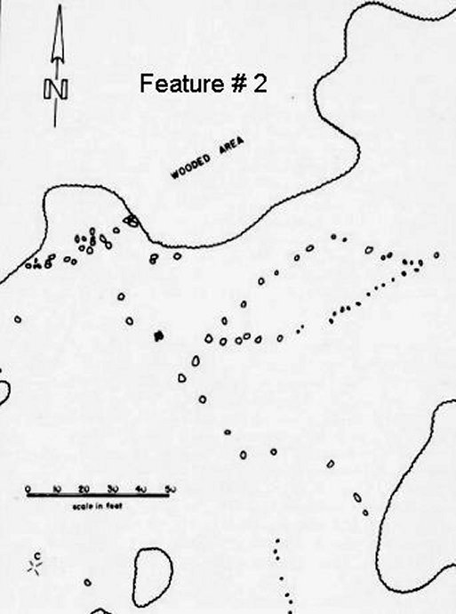
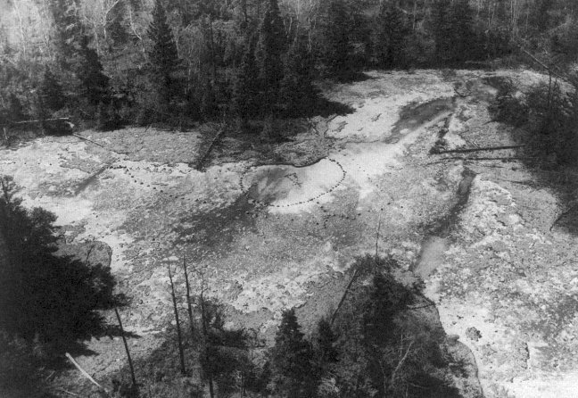
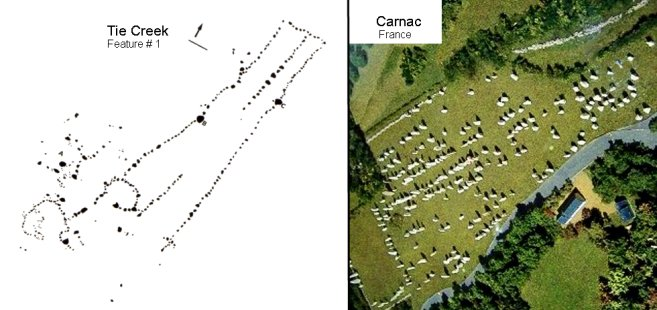
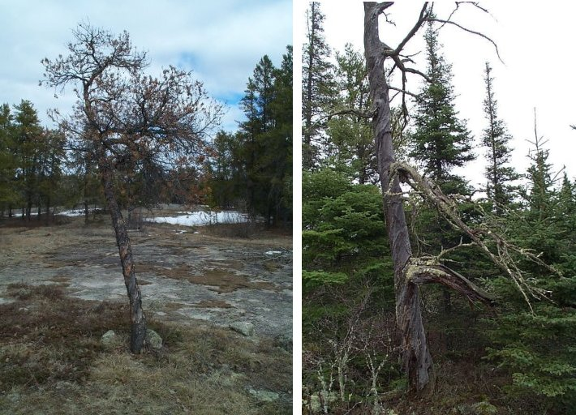
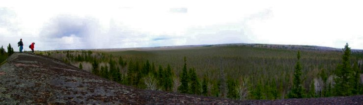

Tie Creek Petroforms |
 |
|
Feature # 3 Today  |
|
Feature # 3 is a circle of 96 stones with a triangle in the middle of
it. The feature was modified sometime after 1953 as all photos prior to
this date do not have the cross at the top of the triangle.
|
 |
Most of the good archaeological ground data was recovered in 1934 and
1935. At that time Mr. & Mrs. Des Whellams reported that the cross was
definitely absent in 1938 and photos from 1953 show no cross. The
expansion of the triangle base and the center stone are original to the
form. |
 |
 Feature # 2 just west of Feature # 3 |
|  |

I have been told that the same level of
consciousness and spiritual source worked in both areas, Tie Creek,
Manitoba and Carnac France. |

Two different Jack Pine trees that are twisted like candy canes from the
spiralling energies at the sites. The left one is from Bannock Point,
located along an energy line from the modern circle to the Woman
Petroform. The right one is located just west of Feature #1 at the Tie
Creek Site. |
 Tie Creek Valley View |
Sedona Magnetic Anomaly Website Back to Ancient HOME |